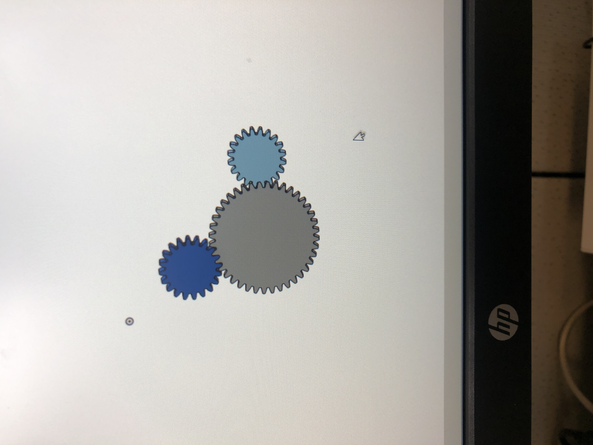
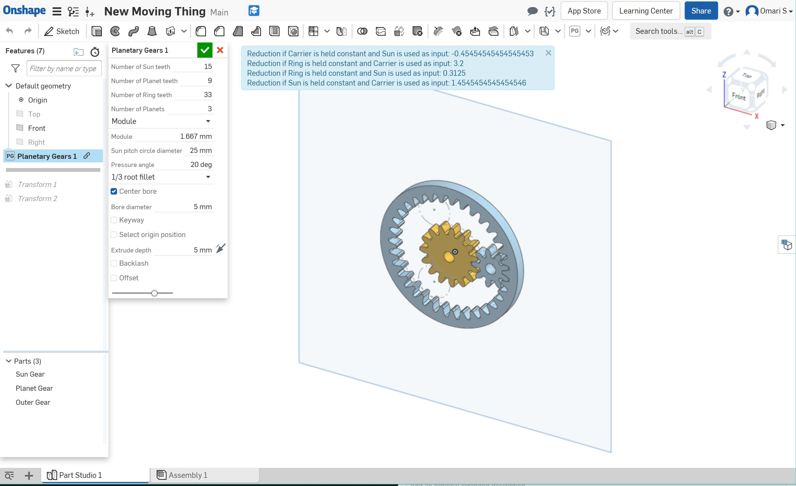
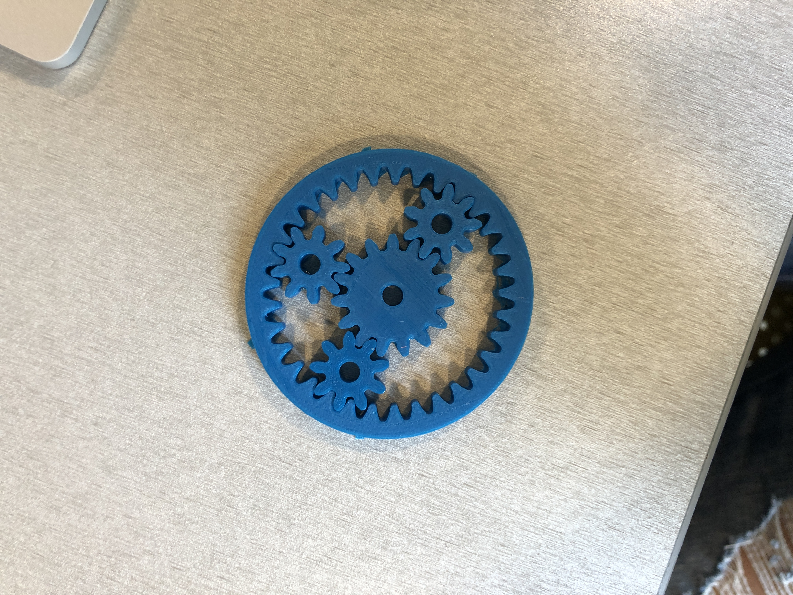

Assignment 4: In Motion

Assignment 4
I actually found OnShape realatively painless to use. When Josh mentioned gears in lecture, I figured I would want to try a project that used that, despite it taking some additional steps to get it rolling in OnShape.
Following the instructions in the slide deck was pretty easy and once I got the Spur Gear FeatureScript installed, I started to play around.
Knowing I would need at least two parts, I started designing two gears, making sure that the number of teeth and the modules would match or be compatible. I found the featurescript and OnShape very useful for helping me figure this out.
Partially inspired by Mickey Mouse, I ended up designing three gears that would fit together in an assembly.

However, while exploring more of the featurescript examples, I found something called "planetary gears", and thought they would accomplish something similar to what I designed, but slightly cooler, and in a way that would stand alone.

Once I was pleased with the designs, I wanted to modify it a little and add 3 gears (could not figure out how to get them to preview in OnShape however, until I moved to assembly view). Once in assembly view, I was pleased with the fit and proceeded to think about how I wanted to actually fabricate the gears.
I figured I could export them as a DXF and laser cut them, but I thought I would be missing some structure and depth that would be necessary to have them rotate properly. I quickly exported them to an .stl file from OnShape, and opened it in Dremel to see how long it would take to 3D print them.
Luckily for me, it would only take approximately 30 minutes to print the pieces, so against my better judgement and my experiences of last week, I decided I could do a few attempts of this print.
Luckily for me, the prints came out great on their first try (I think I've got the printing thing down now). I had some trouble breaking apart the skirt from the rest of the print, but eventually I was able to seperate the gears and assemble them together.

Reflection
OnShape is actually a great CAD tool, as I love the features and it is one of the easiest softwares to pick up that we've explored so far. As I get more familar with some of the concepts and tools, I'm finding some of the projects becoming more enjoyable as I'm spending less time struggling and more time having fun assembling, and getting something that can move (and is supposed to move!). I also felt nice to see my design validated as changing to planetary gears allowed me to have a standalone gearset that rotates within itself without needing another assembly piece.
Shout Outs:
Shout outs to: Mill staff for assisting me with 3D printers, and Joshua for the resources on gears that inspired me to use them!